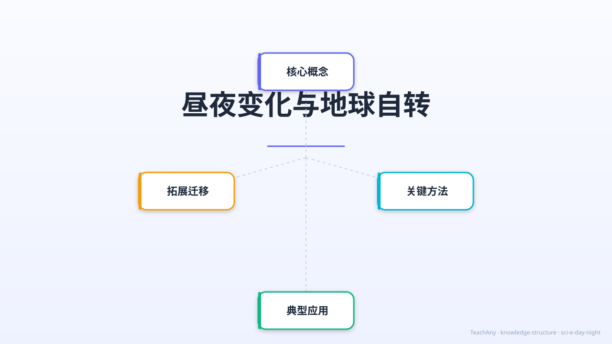

探索为什么太阳每天从东边升起、从西边落下，揭开地球自转的秘密

ABT叙事结构 · 激活好奇心
太阳每天从东边升起，从西边落下。白天有阳光，夜晚天黑。这是每个人都经历过的自然现象，我们已经习以为常……
但是，等等！太阳真的在绕着地球转吗？如果太阳"东升西落"，是太阳在动，还是我们在动？古人以为地球是中心，其实答案让人惊讶……
因此，今天我们要揭开这个谜——其实不是太阳在转，是地球在转！地球自西向东旋转，才让我们看到太阳"从东升起"。让我们一起探索昼夜的秘密！
地球自转动画 · 昼夜形成 · 时区地图 · 22秒完整讲解
掌握5大知识点，理解昼夜变化的完整图景
地球绕着一根看不见的轴（地轴）不停地旋转。旋转方向是从西向东，转一圈需要24小时，正好是一天。
方向：自西向东 ⬅️➡️地球是不透明的球体，太阳只能照亮一半。朝向太阳的一面是白天（昼），背对太阳的一面是夜晚（夜）。地球自转，所以昼夜交替出现。
不透明 → 有阴影 → 有夜晚地球自西向东转，站在地球上的我们就感觉太阳从东边升起、西边落下。就像坐在向前开的火车上，窗外的树往后移动——这是参照物的关系！
参照系效应 🚆地球分成24个时区，相邻时区相差1小时。中国用北京时间（东八区，UTC+8），比伦敦快8小时，比纽约快13小时。
24时区 · 相差1小时昼夜变化影响动植物的作息规律：花朵按时开放闭合，动物有白昼型（如鸟类）和夜行型（如猫头鹰、蝙蝠），人类也有生物钟。
生物钟 🦉🌻由于地轴倾斜，昼夜长短随季节变化。夏天白天长、夜晚短；冬天白天短、夜晚长。赤道地区昼夜时长全年接近相等。
夏长冬短 · 地轴倾斜Canvas 地球自转模拟 · 可拖动旋转 · 实时观察昼夜变化
交互式时区换算工具 · 了解全球时间差异
💡 记忆口诀：东边时间早，西边时间晚；每差一个时区，差1小时；北京比伦敦早8小时，比纽约早13小时。
3道选择题 · 含错因诊断 · 即时反馈
完成各个模块，解锁专属成就
四大核心结论 · 牢记带走
我们每天都会经历白天和黑夜的交替，这种现象被称为昼夜变化。想象一下，当你早晨醒来时，阳光透过窗户照进房间，这是白天的开始。随着时间的推移，太阳在天空中移动，到了傍晚，太阳渐渐西沉，天空变暗，夜晚来临。这个过程每天都在重复，但它背后的原因是什么呢？其实，昼夜变化是由地球的自转引起的。地球像一个巨大的陀螺，每24小时自转一圈，这使得地球的不同部分依次面向太阳和背向太阳，从而形成了昼夜交替。
地球自转是指地球绕着自身的轴线旋转的运动。地球的自转轴是一条假想的直线，从北极穿过地球中心到南极。地球自转的方向是自西向东，这意味着从北极上空看，地球是逆时针旋转的。地球自转一周大约需要24小时，这就是我们常说的一天。地球自转的速度在不同纬度是不同的，赤道地区的自转速度最快，约为每小时1670公里，而两极地区几乎不自转。地球自转不仅导致了昼夜变化，还影响了地球的气候和风向。
地球自转是导致昼夜交替的直接原因。当地球自转时，地球的一半面向太阳，这一半就是白天；而另一半背向太阳，这一半就是黑夜。由于地球自转是连续的，地球上的每一个地方都会依次经历白天和黑夜。例如，当北京是白天时，纽约是黑夜；当北京是黑夜时，纽约则是白天。这种现象不仅发生在地球上，也发生在其他行星上。例如，火星的自转周期约为24.6小时，因此火星上也有昼夜交替，但火星的昼夜长度与地球略有不同。
地球自转的速度决定了地球上的时间。地球自转一周需要24小时，这就是我们定义一天的基础。地球自转的速度在不同的纬度上有所不同，赤道地区的自转速度最快，约为每小时1670公里，而两极地区几乎不自转。地球自转的速度也受到外部因素的影响，例如月球的引力会导致地球自转速度逐渐减慢。科学家通过精确的测量发现，地球自转速度每年大约减慢1.78毫秒。这种微小的变化在短期内对人类生活影响不大，但在长期的地质时间尺度上，地球的自转速度变化会显著影响地球的气候和生态系统。
虽然地球自转直接导致昼夜交替，但季节变化则是由地球的公转和自转轴倾斜共同作用的结果。地球的自转轴并不是垂直于公转轨道的，而是倾斜了约23.5度。这种倾斜使得地球在公转过程中，不同地区接收到的太阳辐射量不同，从而形成了四季。例如，当北半球倾向于太阳时，北半球是夏季，南半球是冬季；反之亦然。地球自转轴的方向在长时间内也会发生变化，这种现象被称为岁差。岁差会导致地球的季节变化逐渐发生改变，但这种变化非常缓慢，通常需要数千年才能观察到显著的影响。
地球自转不仅影响了地球上的昼夜和季节变化，还影响了我们对天体运动的观察。由于地球自转，我们看到的星星、月亮和太阳似乎在天空中移动。例如，太阳每天从东方升起，西方落下，这是地球自转的结果。同样，星星在夜空中也会随着地球的自转而移动。古代天文学家通过观察天体运动，发现了地球自转的现象，并利用这一现象制定了历法和时间系统。地球自转还导致了科里奥利力的产生，这种力影响了地球上的风向和洋流，从而对全球气候产生了重要影响。
地球自转的测量可以通过多种方法进行。古代天文学家通过观察太阳在天空中的位置变化，估算出地球自转的速度。现代科学家则使用更精确的仪器，如原子钟和激光测距仪，来测量地球自转的速度和变化。例如，科学家通过测量地球上不同地点的重力加速度，可以计算出地球自转的速度。此外，卫星和天文望远镜也可以用来观测地球自转对天体运动的影响，从而验证地球自转的速度和方向。通过这些测量和验证，科学家能够更准确地了解地球自转的机制和变化，从而更好地预测地球的气候和地质活动。
地球自转的速度和方向在长期的地质时间尺度上会发生变化。科学家通过研究地球的地质记录和天体运动，发现地球自转速度在过去数十亿年中逐渐减慢。这种变化主要是由于月球的引力作用和地球内部的摩擦损耗。未来，地球自转速度将继续减慢，但这个过程非常缓慢，通常需要数百万年才能观察到显著的变化。地球自转速度的变化会影响地球的气候和生态系统，例如，地球自转速度减慢会导致昼夜长度逐渐增加，从而影响植物的光合作用和动物的生物钟。科学家通过模拟和预测地球自转的未来变化，可以更好地理解地球的长期演化过程。
地球自转是指地球绕自身轴线旋转的运动，方向为自西向东。这解释了为什么太阳总是从东方升起、西方落下。一个有趣的证据是傅科摆实验：摆锤在长时间摆动后，轨迹会逐渐偏移，这正是因为地球在摆下方自转造成的。生活中，我们也能通过观察星空发现北极星几乎不动，而其他星星呈弧形移动，这是地球自转的直观证明。此外，飓风在北半球总是逆时针旋转，南半球则是顺时针，这也是地球自转导致的科里奥利力效应。
昼夜变化直接影响生物的生物钟。例如，向日葵白天跟随太阳转动，夜晚则垂下花盘；公鸡会在黎明时分打鸣，这是其体内生物钟与光照同步的结果。人类同样受昼夜节律调节：褪黑激素在夜间分泌增多使人困倦，白天阳光则会抑制其分泌。学科实验中，科学家发现将仓鼠置于持续黑暗中，其活动周期会逐渐偏离24小时，证明生物钟需要外界光暗交替的校准。现代生活中，夜班工人或跨时区旅行者常出现‘时差’，正是昼夜节律被打乱的典型例子。
1. 你知道地球自转的方向是什么吗？2. 地球自转一周需要多长时间？3. 地球自转是如何导致昼夜交替的？
1. 地球自转的速度在不同纬度上有什么不同？2. 地球自转轴的倾斜角度是多少？3. 地球自转速度的变化会对地球的气候产生什么影响？
学生常见的误区是认为昼夜变化是由地球公转引起的。实际上，昼夜变化是由地球自转引起的。错因在于学生混淆了地球自转和公转的概念。诊断时，教师可以通过模拟实验和直观的图示，帮助学生理解地球自转与昼夜变化的直接关系。
设计一个实验，模拟地球自转对昼夜变化的影响。你可以使用一个地球仪和一个光源来模拟太阳和地球的相对运动。通过调整地球仪的旋转速度和光源的位置，观察地球仪上不同区域的昼夜变化，并分析地球自转速度对昼夜长度的影响。